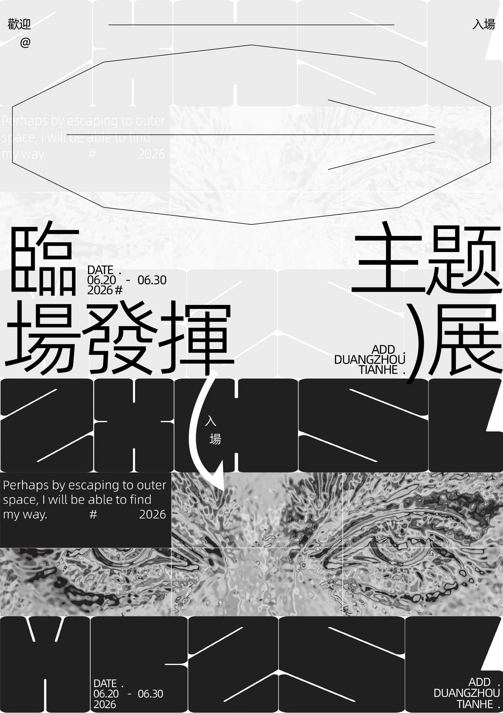
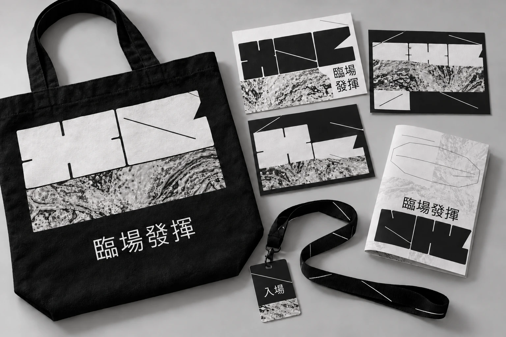
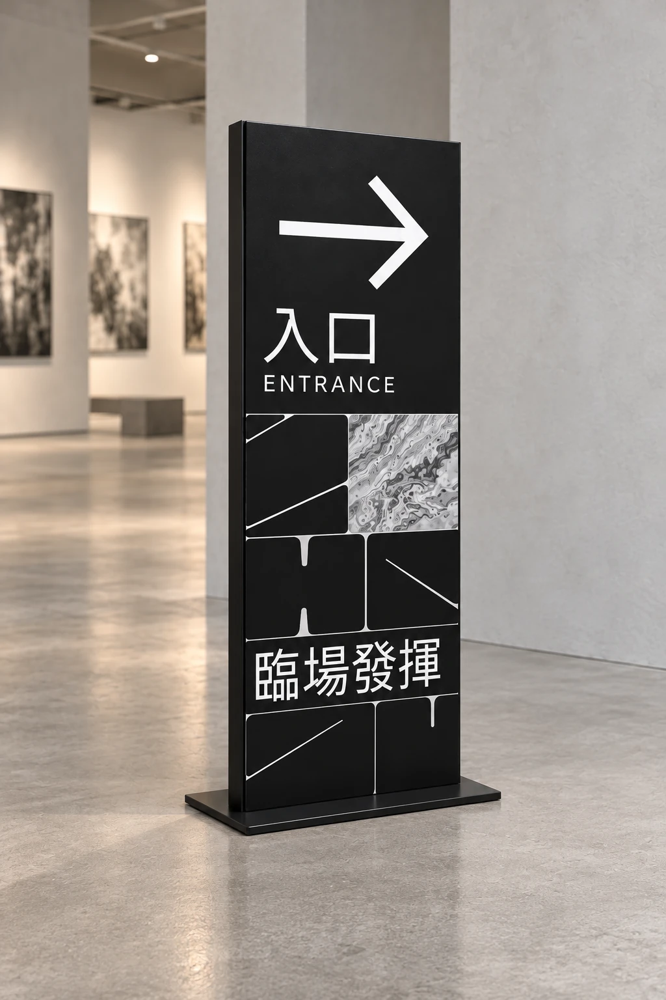
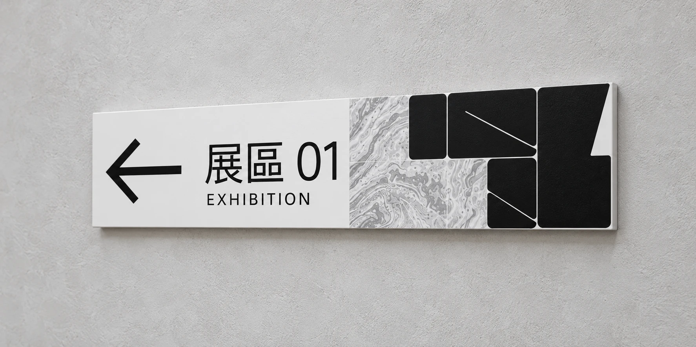
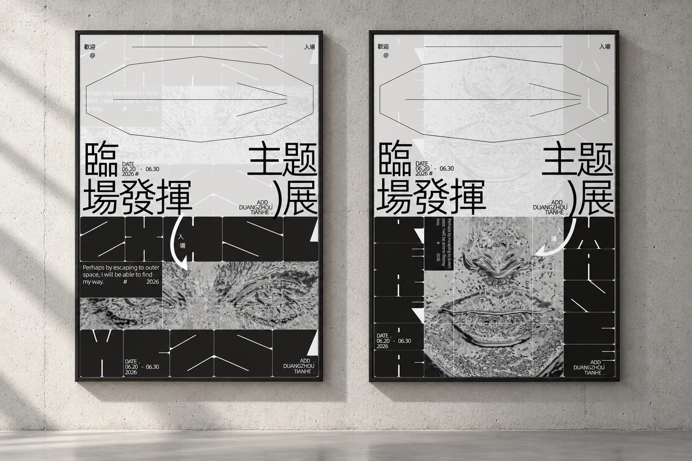
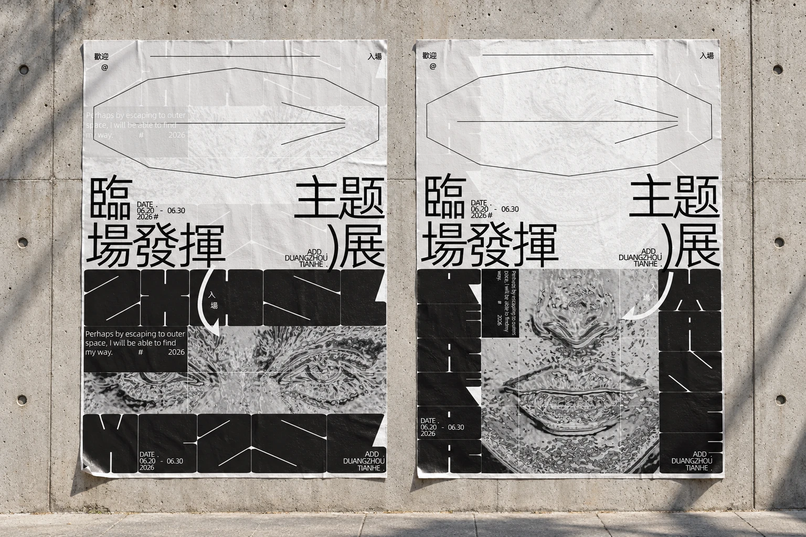
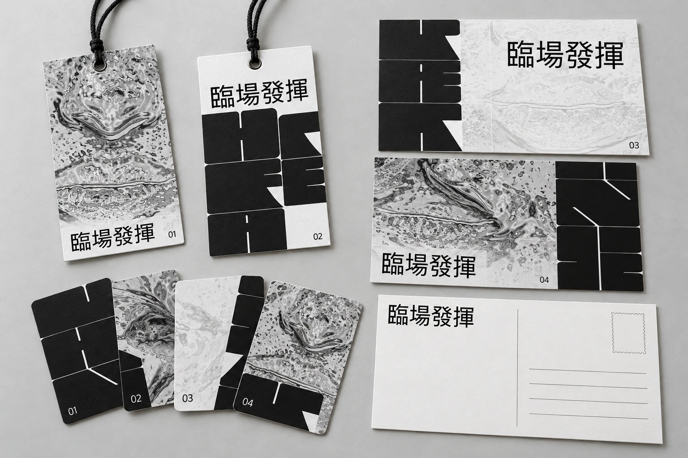

PROJECT DETAIL / 09
临场
发挥
EXHIBITION · GRAPHIC DESIGN
主题 / THEME
主题展视觉、周边与小型导视设计
作者 / AUTHOR
钟锡汉 ZHONGXIHAN
项目说明 / DESCRIPTION
以黑白灰、模块化实验字形和流动纹理构建主题展视觉，将海报语言延展至帆布袋、明信片、折页、挂绳及空间导视。

主题展视觉、周边与小型导视设计
钟锡汉 ZHONGXIHAN
以黑白灰、模块化实验字形和流动纹理构建主题展视觉，将海报语言延展至帆布袋、明信片、折页、挂绳及空间导视。
围绕“临场发挥”主题，在规则的模块与自由的流动纹理之间形成对比，表现秩序与即兴共存的视觉状态。
从原海报中提取黑白块面、实验字形、细线和流动纹理，应用于周边与导视。通过 AI 辅助效果图展示材质和空间关系，再根据反馈调整袋子下方的图形，并将入口立式导视、墙面展区导视分别独立展示。
大尺度字形建立视觉识别，流动纹理打破几何块面的稳定感。周边保持统一的黑白配色；导视以清晰的箭头和中英文信息为主，识别图形为辅，兼顾展览氛围与方向提示。
袋子下方原有边框和线条使信息显得复杂，因此去掉该区域的线条与外框，只保留“临场发挥”四个字。导视分别呈现独立效果，检查牌面、文字和图形的透视关系，使版面与实体表面保持一致。





将黑白实验字形与流动纹理延展至吊牌、明信片和系列小卡，使用不同局部构图建立统一而有变化的纸品系列。
